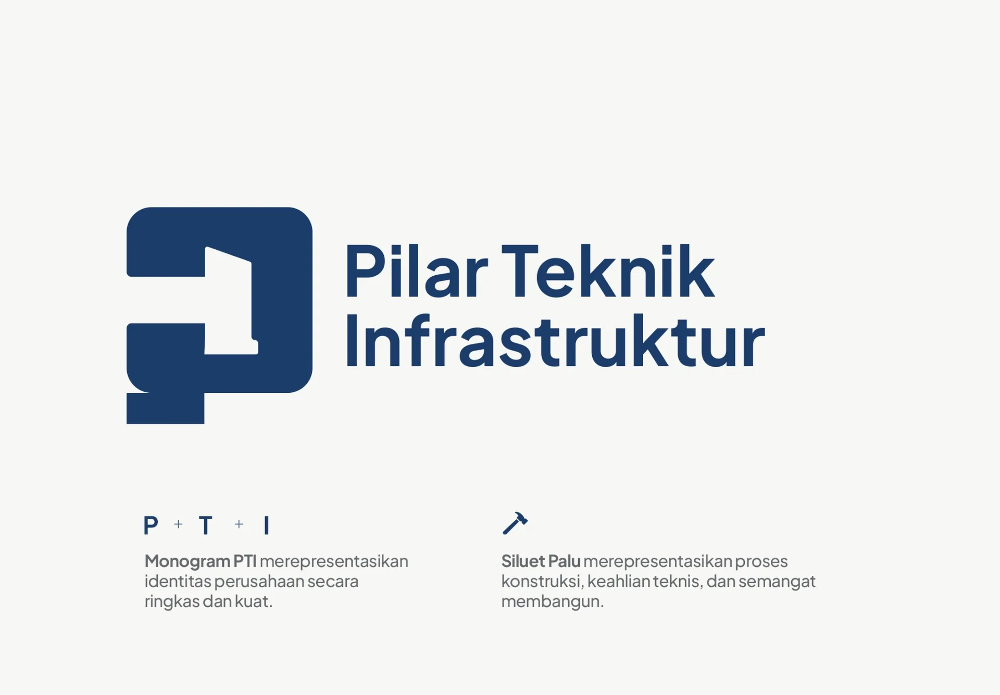
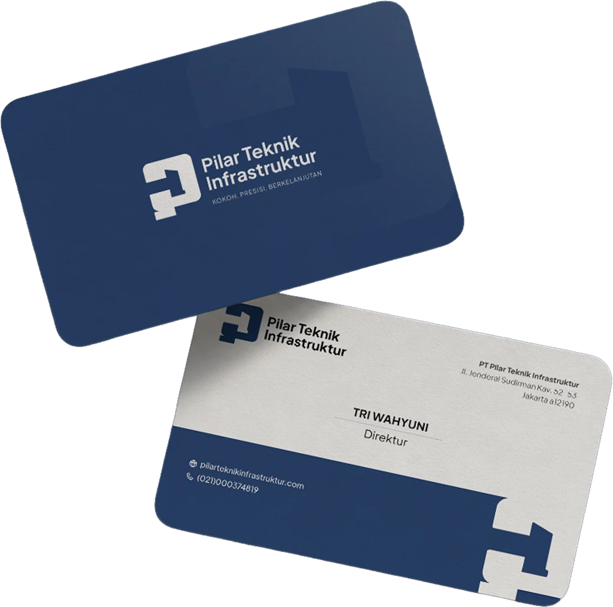
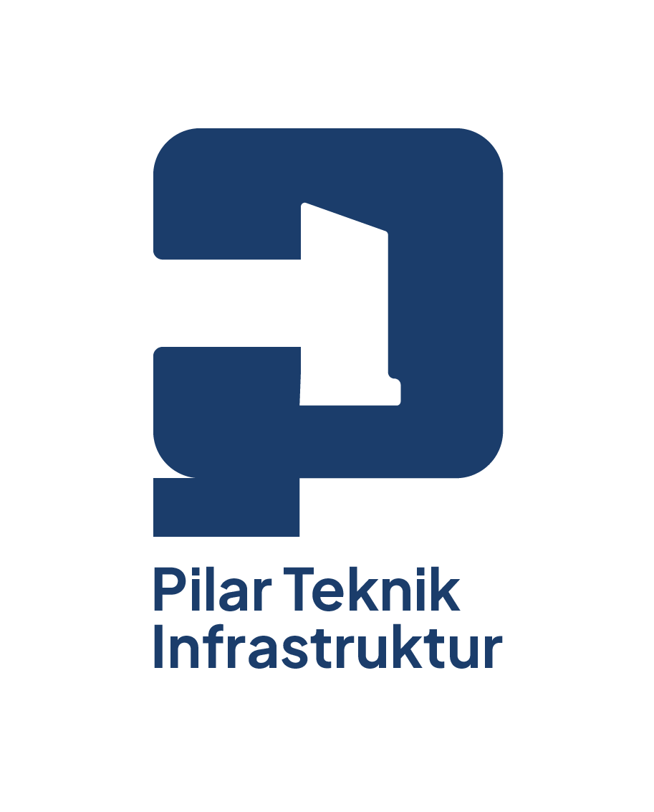

Make design decisions explicit
DESIGN INTENT /
COMPONENT STATES / RESPONSIVE RULES /
IMPLEMENTATION

DESIGN INTENT /
COMPONENT STATES / RESPONSIVE RULES /
IMPLEMENTATION
Reusable values help design and development stay aligned across screens.
Reusable tokenConsistent · Reusable · Documented · Predictable
Typography, spacing, labels, and content hierarchy communicate what matters before interaction begins.
Heading, body, label, helper text, status and action hierarchy
Document component behavior, states, and edge cases.
Specs communicate structure, spacing, content behavior, states, and interaction rules so implementation does not depend on guesswork.
Define how the design adapts instead of leaving responsive decisions implicit.

Breakpoint guidance, wrapping behavior, component variants, and image treatment help the implemented interface keep the intended hierarchy.
Review the result against the intended interaction and visual system.
I collaborate with developers to explain design decisions, resolve implementation questions, and support accurate translation from Figma into the working product.
